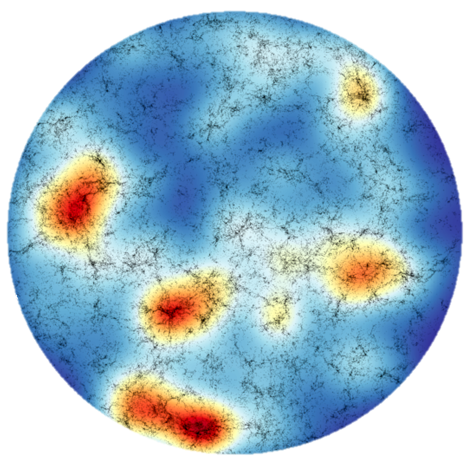

The History of Star Forming Gas
My primary research interest is understanding the processes
that form and shape galaxies over cosmic time. Clouds cool atomic
and molecular hydrogen gas play a particularly significant role
in this history: cold molecular gas is the precursor to the
birth of new stars, while reservoirs of atomic gas surround
and fill star forming disks and sit at the interface between
galaxies and the intergalactic medium. Tracing the properties
of this gas will allow us to understand how the barryonic matter
has been processed and transformed to create the galaxies we see
today.
Study of molecular gas in the early universe requires
extremely sensitive millimeter and sub-millimeter wavelength
observations with telescopes such as the Atacama Large
Millimiter/submillimeter Array (ALMA). Because of the long
observation times required to do this type of research, studies
to date have focused on
extremely small regions of the sky. This may result in sampling
biases and uncertainties that hinder our understanding. I use
cosmological simulations to understand the extent of these biases
and develop tools to account for them.
In addition to observing gas in the past, we
also need to understand its behavior in the present. Many
properties of molecular gas, such as the relationships between
different spectral lines that are used to trace its abudnance,
are poorly understood even in nearby galaxies. To this end, I
am conducting a survey of multiple molecular gas spectral lines
in nearby galaxies to understand how their luminosities correlate
with one another and various other galaxy properties.
Related Publications
"The Arizona Molecular ISM Survey with the SMT: Survey
Overview and Public Data Release", R. P. Keenan,
D. P. Marrone, G. K. Keating, E. C. Mayer, K. Bays,
J. Downey, L. C. Dunn, J. C. Flores, T. W. Folkers,
D. C. Forbes, B. C. Guvenen, C. Holmstedt, R. M. Moulton,
& P. Sullivan 2023, The Astrophysical Journal, submitted
"Biases and Cosmic Variance in Molecular Gas Abundance
Measurements at High Redshift", R. P. Keenan,
D. P. Marrone, & G. K. Keating 2020, The Astrophysical
Journal, 904, 127

Intensity mapping is a novel tool for studying gas in the
distant universe. The traditional approach to studying distant
galaxies has been to select a small number of targets to
observe in great detail; this provides a wealth of
information about individual objects, but may miss important
statistical trends. Line intensity mapping (LIM) allows us to study large
samples of galaxies, many too faint to be detected in the traditional
approach, by combining their light statistically. This tool will
provide complimenatry information to the detailed traditonal
studies by surveying galaxies over enormous volumes of space.
I build models to predict the signal that will be seen by LIM
surveys at a variety of wavelengths. These models are being used to
inform instrument design and survey strategy for upcoming LIM
projects. I also work on developing data analysis techniques for
existing and future LIM datasets.
I am a collaborator in a number of ongoing intensity mapping projects.
These include the Millimeter Intensity Mapping Experiment
(mmIME), Tomographic Ionized-carbon Mapping Experiment (TIME), and
the Terahertz Intensity Mapper (TIM).
Related Publications
"An Intensity Mapping Constraint on the CO-Galaxy Cross Power Spectrum at Redshift ~ 3"
, R. P. Keenan, G. K. Keating, & D. P. Marrone 2020,
The Astrophysical Journal, 927, 161
"An Intensity Mapping Detection of Aggregate CO Line Emission
at 3 mm", G. K. Keating, D. P. Marrone, G. C. Bower, &
R. P. Keenan 2020, The Astrophysical Journal, 901, 141